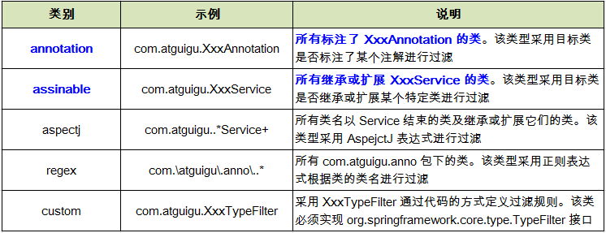

一、在 classpath 中扫描组件
组件扫描(component scanning): Spring 能够从 classpath 下自动扫描, 侦测和实例化具有特定注解的组件.
特定组件包括:
- @Component: 基本注解, 标识了一个受 Spring 管理的组件
- @Respository: 标识持久层组件
- @Service: 标识服务层(业务层)组件
- @Controller: 标识表现层组件
对于扫描到的组件, Spring 有默认的命名策略: 使用非限定类名, 第一个字母小写. 也可以在注解中通过 value 属性值标识组件的名称
当在组件类上使用了特定的注解之后, 还需要在 Spring 的配置文件中声明 <context:component-scan> ：
示例：
新建一个com.annotation包，然后在该包内分别新建三个子包：controller、service、repository，同时新建TestObject.java和Main.java，在三个子包内分别新建对应名称的类：UserController.java、UserService.java、UserRepository.java、UserRepositoryImpl.java。新建一个beans-annotation.xml
TestObject.java:
1 2 3 4
| package com.annotation; import org.springframework.stereotype.Component; @Component public class TestObject {}
|
UserController.java:
1 2 3 4 5 6 7 8
| package com.annotation.controller; import org.springframework.stereotype.Controller; @Controller public class UserController { public void excute() { System.out.println("UserController excute..."); } }
|
UserService.java:
1 2 3 4 5 6 7 8
| package com.annotation.service; import org.springframework.stereotype.Service; @Service public class UserService { public void add() { System.out.println("UserService add..."); } }
|
UserRepository.java:
1 2 3 4
| package com.annotation.repository; public interface UserRepository { void save(); }
|
UserRepositoryImpl.java:
1 2 3 4 5 6 7 8 9
| package com.annotation.repository; import org.springframework.stereotype.Repository; @Repository("userRepository") public class UserRepositoryImpl implements UserRepository { @Override public void save() { System.out.println("UserRepositoryImpl save..."); } }
|
Main.java:
1 2 3 4 5 6 7 8 9 10 11 12 13 14 15 16 17 18 19
| package com.annotation; import org.springframework.context.ApplicationContext; import org.springframework.context.support.ClassPathXmlApplicationContext; import com.annotation.controller.UserController; import com.annotation.repository.UserRepository; import com.annotation.service.UserService; public class Main { public static void main(String[] args) { ApplicationContext ctx = new ClassPathXmlApplicationContext("beans-annotation.xml"); TestObject to = (TestObject)ctx.getBean("testObject"); System.out.println(to); UserController userController = (UserController)ctx.getBean("userController"); System.out.println(userController); UserService userService = (UserService)ctx.getBean("userService"); System.out.println(userService); UserRepository userRepository = (UserRepository)ctx.getBean("userRepository"); System.out.println(userRepository); } }
|
beans-annotation.xml:
1 2
| <!-- 指定 spring IOC 容器扫描的包 --> <context:component-scan base-package="com.annotation"></context:component-scan>
|
试试resource-pattern属性，改写上面的代码,Main.java里面的TestObject、UserController、UserService三段相关代码隐藏
改写beans-annotation.xml:
1 2 3
| <!-- 指定 spring IOC 容器扫描的包 --> <!-- 这里 resource-pattern 指定了只扫描 repository 包下面的所有的类 --> <context:component-scan base-package="com.annotation" resource-pattern="repository/*.class"></context:component-scan>
|
<context:include-filter> 和 <context:exclude-filter> 子节点支持多种类型的过滤表达式：

改写beans-annotation.xml实践下：
1 2 3 4 5 6 7 8 9
| <!-- 指定 spring IOC 容器扫描的包 --> <!-- <context:component-scan base-package="com.annotation" resource-pattern="repository/*.class"> </context:component-scan> --> <!-- context:exclude-filter 子节点指定排除哪些表达式的组件 --> <context:component-scan base-package="com.annotation"> <context:exclude-filter type="annotation" expression="org.springframework.stereotype.Repository" /> </context:component-scan>
|
结果，后台报异常，No bean named ‘userRepository’ is defined。
继续改写beans-annotation.xml实践下:
1 2 3 4 5 6 7 8 9 10 11 12 13 14 15
| <!-- 指定 spring IOC 容器扫描的包 --> <!-- <context:component-scan base-package="com.annotation" resource-pattern="repository/*.class"> </context:component-scan> --> <!-- context:exclude-filter 子节点指定排除哪些表达式的组件 --> <!-- <context:component-scan base-package="com.annotation"> <context:exclude-filter type="annotation" expression="org.springframework.stereotype.Repository" /> </context:component-scan> --> <context:component-scan base-package="com.annotation" use-default-filters="false"> <context:include-filter type="annotation" expression="org.springframework.stereotype.Repository" /> </context:component-scan>
|
注意：使用<context:include-filter>时需要加上use-default-filters="false"，不然不起作用。不加该属性会默认把@Controller、@Service、@Repository等组件也给扫描进来。
组件装配
<context:component-scan> 元素还会自动注册 AutowiredAnnotationBeanPostProcessor 实例, 该实例可以自动装配具有 @Autowired 和 @Resource 、@Inject注解的属性.
使用 @Autowired 自动装配 Bean
@Autowired 注解自动装配具有兼容类型的单个 Bean属性
- 构造器, 普通字段(即使是非 public), 一切具有参数的方法都可以应用@Authwired 注解
- 默认情况下, 所有使用 @Authwired 注解的属性都需要被设置. 当 Spring 找不到匹配的 Bean 装配属性时, 会抛出异常, 若某一属性允许不被设置, 可以设置 @Authwired 注解的 required 属性为 false
- 默认情况下, 当 IOC 容器里存在多个类型兼容的 Bean 时, 通过类型的自动装配将无法工作. 此时可以在 @Qualifier 注解里提供 Bean 的名称. Spring 允许对方法的入参标注 @Qualifiter 已指定注入 Bean 的名称
- @Authwired 注解也可以应用在数组类型的属性上, 此时 Spring 将会把所有匹配的 Bean 进行自动装配.
- @Authwired 注解也可以应用在集合属性上, 此时 Spring 读取该集合的类型信息, 然后自动装配所有与之兼容的 Bean.
- @Authwired 注解用在 java.util.Map 上时, 若该 Map 的键值为 String, 那么 Spring 将自动装配与之 Map 值类型兼容的 Bean, 此时 Bean 的名称作为键值
使用 @Resource 或 @Inject �自动装配 Bean
Spring 还支持 @Resource 和 @Inject 注解，这两个注解和 @Autowired 注解的功用类似
@Resource 注解要求提供一个 Bean 名称的属性，若该属性为空，则自动采用标注处的变量或方法名作为 Bean 的名称
@Inject 和 @Autowired 注解一样也是按类型匹配注入的 Bean， 但没有 reqired 属性
建议使用 @Autowired 注解